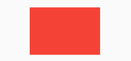

4.2 布局原理与约束（constraints）
尺寸限制类容器用于限制容器大小，Flutter中提供了多种这样的容器，如ConstrainedBox、SizedBox、UnconstrainedBox、AspectRatio 等，本节将介绍一些常用的。
4.2.1 Flutter布局模型
Flutter 中有两种布局模型：
- 基于 RenderBox 的盒模型布局。
- 基于 Sliver ( RenderSliver ) 按需加载列表布局。
两种布局方式在细节上略有差异，但大体流程相同，布局流程如下：
- 上层组件向下层组件传递约束（constraints）条件。
- 下层组件确定自己的大小，然后告诉上层组件。注意下层组件的大小必须符合父组件的约束。
- 上层组件确定下层组件相对于自身的偏移和确定自身的大小（大多数情况下会根据子组件的大小来确定自身的大小）。
比如，父组件传递给子组件的约束是“最大宽高不能超过100，最小宽高为0”，如果我们给子组件设置宽高都为200，则子组件最终的大小是100*100，因为任何时候子组件都必须先遵守父组件的约束，在此基础上再应用子组件约束（相当于父组件的约束和自身的大小求一个交集）。
本节我们主要看一下盒模型布局，然后会在可滚动组件一章中介绍 Sliver 布局模型。盒模型布局组件有两个特点：
- 组件对应的渲染对象都继承自 RenderBox 类。在本书后面文章中如果提到某个组件是 RenderBox，则指它是基于盒模型布局的，而不是说组件是 RenderBox 类的实例。
- 在布局过程中父级传递给子级的约束信息由 BoxConstraints 描述。
4.2.2 BoxConstraints
BoxConstraints 是盒模型布局过程中父渲染对象传递给子渲染对象的约束信息，包含最大宽高信息，子组件大小需要在约束的范围内，BoxConstraints 默认的构造函数如下：
const BoxConstraints({
this.minWidth = 0.0, //最小宽度
this.maxWidth = double.infinity, //最大宽度
this.minHeight = 0.0, //最小高度
this.maxHeight = double.infinity //最大高度
})
它包含 4 个属性，BoxConstraints还定义了一些便捷的构造函数，用于快速生成特定限制规则的BoxConstraints，如BoxConstraints.tight(Size size)，它可以生成固定宽高的限制；BoxConstraints.expand()可以生成一个尽可能大的用以填充另一个容器的BoxConstraints。除此之外还有一些其他的便捷函数，读者可以查看类定义。另外我们会在后面深入介绍布局原理时还会讨论 Constraints，在这里，读者只需知道父级组件是通过 BoxConstraints 来描述对子组件可用的空间范围即可。
约定：为了描述方便，如果我们说一个组件不约束其子组件或者取消对子组件约束时是指对子组件约束的最大宽高为无限大，而最小宽高为0，相当于子组件完全可以自己根据需要的空间来确定自己的大小。
下面我们介绍一些常用的通过约束限制子组件大小的组件。
4.2.3 ConstrainedBox
ConstrainedBox用于对子组件添加额外的约束。例如，如果你想让子组件的最小高度是80像素，你可以使用const BoxConstraints(minHeight: 80.0)作为子组件的约束。
示例
我们先定义一个redBox，它是一个背景颜色为红色的盒子，不指定它的宽度和高度：
Widget redBox = DecoratedBox(
decoration: BoxDecoration(color: Colors.red),
);
我们实现一个最小高度为50，宽度尽可能大的红色容器。
ConstrainedBox(
constraints: BoxConstraints(
minWidth: double.infinity, //宽度尽可能大
minHeight: 50.0 //最小高度为50像素
),
child: Container(
height: 5.0,
child: redBox ,
),
)
运行效果如图4-1所示：

可以看到，我们虽然将Container的高度设置为5像素，但是最终却是50像素，这正是ConstrainedBox的最小高度限制生效了。如果将Container的高度设置为80像素，那么最终红色区域的高度也会是80像素，因为在此示例中，ConstrainedBox只限制了最小高度，并未限制最大高度。
4.2.4 SizedBox
SizedBox用于给子元素指定固定的宽高，如：
SizedBox(
width: 80.0,
height: 80.0,
child: redBox
)
运行效果如图4-2所示：

实际上SizedBox只是ConstrainedBox的一个定制，上面代码等价于：
ConstrainedBox(
constraints: BoxConstraints.tightFor(width: 80.0,height: 80.0),
child: redBox,
)
而BoxConstraints.tightFor(width: 80.0,height: 80.0)等价于：
BoxConstraints(minHeight: 80.0,maxHeight: 80.0,minWidth: 80.0,maxWidth: 80.0)
而实际上ConstrainedBox和SizedBox都是通过RenderConstrainedBox来渲染的，我们可以看到ConstrainedBox和SizedBox的createRenderObject()方法都返回的是一个RenderConstrainedBox对象：
@override
RenderConstrainedBox createRenderObject(BuildContext context) {
return RenderConstrainedBox(
additionalConstraints: ...,
);
}
4.2.5 多重限制
如果某一个组件有多个父级ConstrainedBox限制，那么最终会是哪个生效？我们看一个例子：
ConstrainedBox(
constraints: BoxConstraints(minWidth: 60.0, minHeight: 60.0), //父
child: ConstrainedBox(
constraints: BoxConstraints(minWidth: 90.0, minHeight: 20.0),//子
child: redBox,
),
)
上面我们有父子两个ConstrainedBox，他们的约束条件不同，运行后效果如图4-3所示：

最终显示效果是宽90，高60，也就是说是子ConstrainedBox的minWidth生效，而minHeight是父ConstrainedBox生效。单凭这个例子，我们还总结不出什么规律，我们将上例中父子约束条件换一下：
ConstrainedBox(
constraints: BoxConstraints(minWidth: 90.0, minHeight: 20.0),
child: ConstrainedBox(
constraints: BoxConstraints(minWidth: 60.0, minHeight: 60.0),
child: redBox,
)
)
运行效果如图4-4所示：

最终的显示效果仍然是90，高60，效果相同，但意义不同，因为此时minWidth生效的是父ConstrainedBox，而minHeight是子ConstrainedBox生效。
通过上面示例，我们发现有多重限制时，对于minWidth和minHeight来说，是取父子中相应数值较大的。实际上，只有这样才能保证父限制与子限制不冲突。
思考题：对于
maxWidth和maxHeight，多重限制的策略是什么样的呢？
4.2.6 UnconstrainedBox
虽然任何时候子组件都必须遵守其父组件的约束，但前提条件是它们必须是父子关系，假如有一个组件 A，它的子组件是B，B 的子组件是 C，则 C 必须遵守 B 的约束，同时 B 必须遵守 A 的约束，但是 A 的约束不会直接约束到 C，除非B将A对它自己的约束透传给了C。 利用这个原理，就可以实现一个这样的 B 组件：
- B 组件中在布局 C 时不约束C（可以为无限大）。
- C 根据自身真实的空间占用来确定自身的大小。
- B 在遵守 A 的约束前提下结合子组件的大小确定自身大小。
而这个 B组件就是 UnconstrainedBox 组件，也就是说UnconstrainedBox 的子组件将不再受到约束，大小完全取决于自己。一般情况下，我们会很少直接使用此组件，但在"去除"多重限制的时候也许会有帮助，我们看下下面的代码：
ConstrainedBox(
constraints: BoxConstraints(minWidth: 60.0, minHeight: 100.0), //父
child: UnconstrainedBox( //“去除”父级限制
child: ConstrainedBox(
constraints: BoxConstraints(minWidth: 90.0, minHeight: 20.0),//子
child: redBox,
),
)
)
上面代码中，如果没有中间的UnconstrainedBox，那么根据上面所述的多重限制规则，那么最终将显示一个90×100的红色框。但是由于 UnconstrainedBox “去除”了父ConstrainedBox的限制，则最终会按照子ConstrainedBox的限制来绘制redBox，即90×20，如图4-5所示：

但是，读者请注意，UnconstrainedBox对父组件限制的“去除”并非是真正的去除：上面例子中虽然红色区域大小是90×20，但上方仍然有80的空白空间。也就是说父限制的minHeight(100.0)仍然是生效的，只不过它不影响最终子元素redBox的大小，但仍然还是占有相应的空间，可以认为此时的父ConstrainedBox是作用于子UnconstrainedBox上，而redBox只受子ConstrainedBox限制，这一点请读者务必注意。
那么有什么方法可以彻底去除父ConstrainedBox的限制吗？答案是否定的！请牢记，任何时候子组件都必须遵守其父组件的约束，所以在此提示读者，在定义一个通用的组件时，如果要对子组件指定约束，那么一定要注意，因为一旦指定约束条件，子组件自身就不能违反约束。
在实际开发中，当我们发现已经使用 SizedBox 或 ConstrainedBox 给子元素指定了固定宽高，但是仍然没有效果时，几乎可以断定：已经有父组件指定了约束！举个例子，如 Material 组件库中的AppBar（导航栏）的右侧菜单中，我们使用SizedBox指定了 loading 按钮的大小，代码如下：
AppBar(
title: Text(title),
actions: <Widget>[
SizedBox(
width: 20,
height: 20,
child: CircularProgressIndicator(
strokeWidth: 3,
valueColor: AlwaysStoppedAnimation(Colors.white70),
),
)
],
)
上面代码运行后，效果如图4-6所示：

我们会发现右侧loading按钮大小并没有发生变化！这正是因为AppBar中已经指定了actions按钮的约束条件，所以我们要自定义loading按钮大小，就必须通过UnconstrainedBox来 “去除” 父元素的限制，代码如下：
AppBar(
title: Text(title),
actions: <Widget>[
UnconstrainedBox(
child: SizedBox(
width: 20,
height: 20,
child: CircularProgressIndicator(
strokeWidth: 3,
valueColor: AlwaysStoppedAnimation(Colors.white70),
),
),
)
],
)
运行后效果如图4-7所示：

生效了！实际上将 UnconstrainedBox 换成 Center 或者 Align 也是可以的，至于为什么，我们会在本书后面布局原理相关的章节中解释。
另外，需要注意，UnconstrainedBox 虽然在其子组件布局时可以取消约束（子组件可以为无限大），但是 UnconstrainedBox 自身是受其父组件约束的，所以当 UnconstrainedBox 随着其子组件变大后，如果UnconstrainedBox 的大小超过它父组件约束时，也会导致溢出报错，比如：
Column(
children: <Widget>[
UnconstrainedBox(
alignment: Alignment.topLeft,
child: Padding(
padding: const EdgeInsets.all(16),
child: Row(children: [Text('xx' * 30)]),
),
),
]
运行效果如图4-8：

文本已经超过屏幕宽度，溢出了。
4.2.7 其他约束类容器
除了上面介绍的这些常用的尺寸限制类容器外，还有一些其他的尺寸限制类容器，比如AspectRatio，它可以指定子组件的长宽比、LimitedBox 用于指定最大宽高、FractionallySizedBox 可以根据父容器宽高的百分比来设置子组件宽高等，由于这些容器使用起来都比较简单，我们便不再赘述，读者可以自行了解。